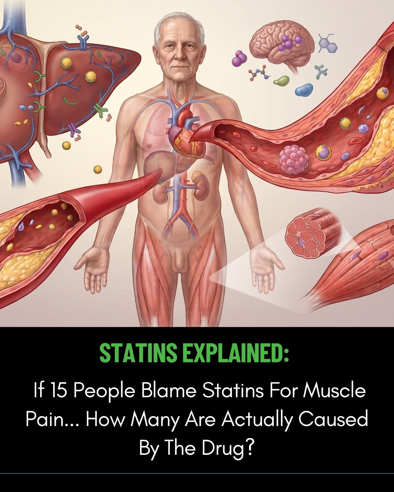

Pooled blinded trials: statins cause only about 1 in 15 reported muscle aches
A pooled analysis of 19 blinded trials with 123,940 people found that over about four years, 27.1 of 100 on a statin reported muscle pain or weakness versus 26.6 of 100 on placebo. This implies that the vast majority of muscle complaints on statins are not caused by the drug, consistent with a nocebo effect.